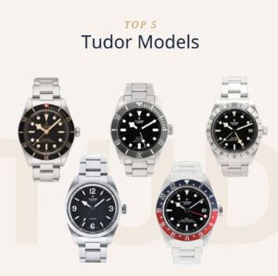
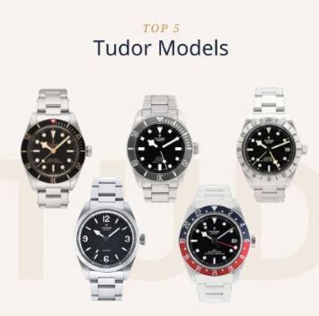
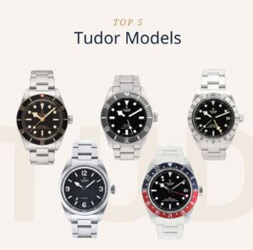
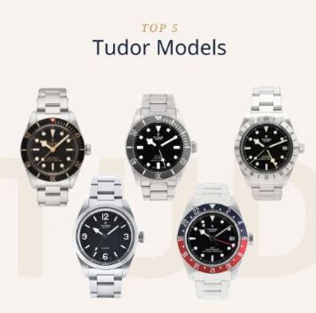

Explore Chrono24: Trends, Inspiration, and Lifestyle
 



Luxury watches are a source of fascination for people around the globe. But what qualifies as a luxury watch? Some may say it's any watch made of expensive materials such as gold or platinum. Others could argue that it has to be a mechanical watch with a handmade movement. Then there are those who define luxury based on legendary brands such as Rolex, Patek Philippe, and Breitling.
Whatever it is you're looking for, you will find luxury watches from all the famous brands in every price range on Chrono24. Find and purchase your dream watch now.
Not every watch has to come fresh from the factory. In fact, many people fall for the charm of watches with designs from the 60s or 70s. These vintage watches include coveted collector's items and hidden treasures waiting to be uncovered by watch fans. Here you will find both expensive rarities as well as legendary pieces whose predecessor models can be purchased at affordable prices.
Searching for the right vintage watch is part of the overall shopping experience and often turns novices into watch aficionados
Every month, over 9 million watch enthusiasts search for their next watch on Chrono24 – perhaps yours is the watch they are looking for? Create a free listing in a few simple steps and find a buyer for your watch.
Once you've made a sale, the rest is easy: The buyer transfers the purchase price to a secure escrow account and then you ship the watch. Once it has arrived safely at its destination, you will receive payment into your bank account. We retain a small commission fee at the time of payout.
Looking to free up some wrist space? Sell your watch now on Chrono24
Found your dream watch on Chrono24? Don't hesitate to make this dream a reality. The safest way to do so is with Chrono24's free Buyer Protection. This comprehensive coverage includes payment via the Escrow Service. Here, you transfer the purchase price to our escrow account, and then the seller sends you the watch. Once you have received your watch, we keep your money safe in our escrow account for 14 days, giving you time to inspect the watch and make sure it is as described.